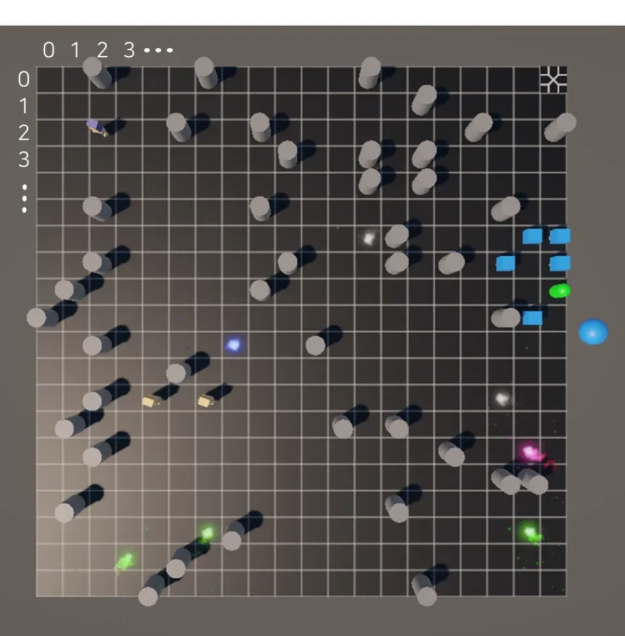
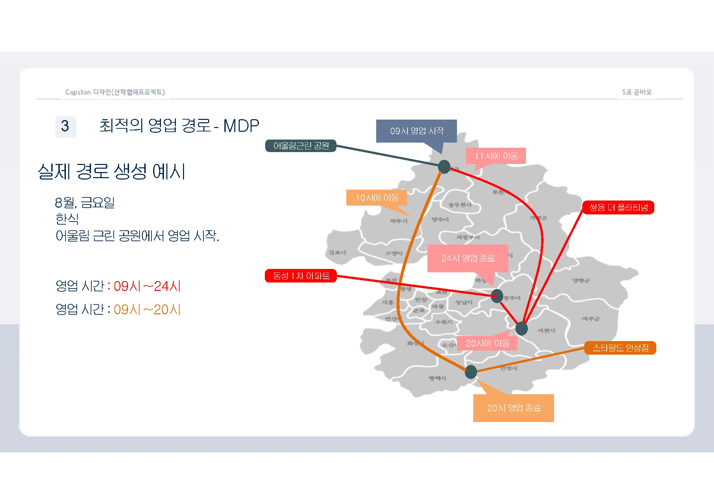

Agentic AI & MDP design
Turning task descriptions into consistent states, actions, rewards, and executable learning environments with LLM agents.
SEJONG UNIVERSITY · MAIN LAB
M.S. student in Artificial Intelligence and Robotics
From natural language to decisions.
From observations to what comes next.
I study how to turn real-world requirements into well-defined learning problems, and how to predict evolving states for better decisions. My work connects reinforcement learning and LLM agents with probabilistic state estimation and digital twins.
At the Machine Intelligence and Networking Lab, advised by Prof. Hyun-Suk Lee.
RESEARCH AREAS
Select an area to discover related papers, projects, patents, and software.
Our work on prediction-based digital twin synchronization appears in IEEE Transactions on Industrial Informatics.
LLMs as MDP Designers has been accepted to NeurIPS 2026.
Destination-guided pedestrian prediction at the IEEE MetaCom 2026 Meta-XP Workshop · November 2026.
THE QUESTIONS BEHIND MY WORK
A common thread across my research: making the structure of a problem explicit, so that intelligent systems can learn and act on it.
Turning task descriptions into consistent states, actions, rewards, and executable learning environments with LLM agents.
Inferring latent destinations from partial motion observations, then translating intent into future trajectories.
Using predicted states to allocate synchronization resources, and modeling cooperative tasks for multiple agents.
A CLOSER LOOK
Planning the goals before learning the policy.
Backward goal decomposition and MCTS for automatically designing goal-conditioned learning problems from natural language.
I am developing goal predicates, path search, and per-goal policy execution. The research investigates how prerequisite structure can guide MDP design while managing the cost of RL evaluation. Full-chain performance remains an experimental research question.

Unity simulation environmentA shared environment. A collaborative task.
A Unity / ML-Agents simulation for cooperative firefighting and rescue, with partial observations, shared rewards, and Python training integration.
Designed the environment and MDP, integrated Python training code, and applied and evaluated HAPPO, QMIX, and ROMA. The work produced a prototype and registered software.

Route recommendation exampleDecision-making for food-truck operators.
A service that combines foot-traffic data, location characteristics, and travel time to recommend food-truck operating routes through an MDP.
As an AI team member, I worked on data preprocessing, MDP formulation, route generation with Value Iteration, and integration with the frontend and backend.
RESEARCH EXPERIENCE
I worked on translating natural-language EMS requirements into explicit MDP formulations and executable reinforcement-learning policies. The workflow incorporates battery capacity, charging and discharging efficiency, and operating constraints, with RAG and data validation supporting the modeling process. Intermediate equations and code make the design inspectable.
Additional research experience includes digital twin synchronization and A-LAMP, a collaborative research contribution listed here as experience rather than a personal publication.
M.S. student
Artificial Intelligence and Robotics
Sejong University · MAIN Lab
Expected graduation · August 2027
Co-inventor · KR 10-2026-0101264 · Filed June 4, 2026
Co-inventor · KR 10-2025-0181493 · Filed November 26, 2025
Copyright registration 2025-058345
National R&D software asset ASSET_0014717